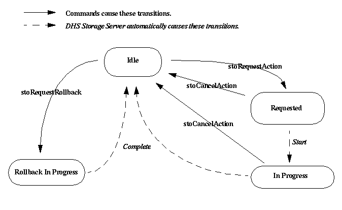

Prepare Action
Preparing is defined as the necessary steps require to
"ready" a media unit for writing.
During CD preprations one of the media
staging areas is used, which
is chosen by the Storage Server. When preparation is
complete, there should be a GEAR physical CDROM volume in one of
the media staging directories.
The chosen CD authoring software is Elektroson GEAR.
Viewing Retrieval Information
There are three status records associated with retrieval. They are:
- Prepare Number.
The number of media units (CDs) that can be prepared.
- Prepare State.
Indicates the current state of the prepare action, expected
values are given below.
- Write Number.
The number of media units (CDs) that can be written, or
have been prepared.
All three status records are displayed on the
Storage Server's window
and on the Request window. The
request window displays each of the status records in a non-editable
box. The subsystem window uses a combination of text
and colours to portray this information.
Obtaining Further information
Further information describing the media units available for preparing
can be obtained by pressing
the "prepare" information button on the
Storage Server window.
This will display the Storage Server's
Action Information window.
Similarly, the
list of media units that may be written (have been prepared)
can be obtained by pressing
the "write" information button.
Changing Prepare Information
Prepare information can not be changed directly. However, it does
change when
data is prepared,
a prepare action is undone,
all copies of a media unit are written, or
when a write action is undone.
Prepare information can also change during a
reset or an
initialize command.
Expected Prepare State Values
The expected prepare state values are listed in the table below.
Given any particular state there is one or more states the action
can move to. The state transition
diagram below depicts the allowed moves (transitions).
Expected Prepare State Values
| Value |
Interpretation |
| ROLLBACK IN-PROGRESS |
The last prepare action that was processed is currently
being "undone" |
|---|
| IDLE |
No processing is currently being performed on the data
to be prepared. |
|---|
| REQUESTED |
A preparation of a media unit is currently waiting for processing.
|
|---|
| IN-PROGRESS |
A media unit is currently being prepared. |
|---|

Shannon Jaeger
Last modified: Thu Jul 23 23:53:57 PDT 1998